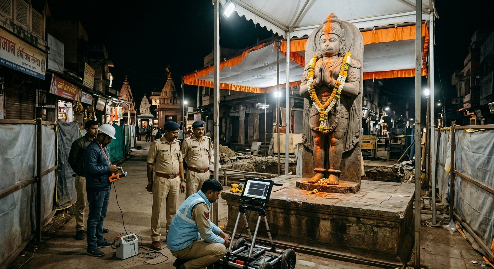

उज्जैन के प्रसिद्ध और ऐतिहासिक खड़े हनुमान मंदिर (कंठाल से छत्रीचौक मार्ग) पर एक बार फिर से प्रशासनिक हलचल और राजनीति तेज हो गई है। सोमवार और मंगलवार की दरमियानी रात को प्रशासनिक अमले और विशेषज्ञों की टीम ने मंदिर पहुंचकर गुप्त तरीके से हाई-टेक मशीनों से जांच की है, जिसके बाद से शहर में तरह-तरह की चर्चाएं और विरोध शुरू हो गया है।
प्राप्त जानकारी के अनुसार, यह पूरी कार्रवाई रात करीब 12:30 बजे शुरू हुई और लगभग डेढ़ घंटे तक चली। भोपाल से आए तकनीकी विशेषज्ञों और एसडीएम के नेतृत्व में आधुनिक इलेक्ट्रॉनिक उपकरणों के जरिए यह जांचा गया कि जमीन में प्रतिमा की पकड़ और गहराई कितनी है। सिंहस्थ-2028 की तैयारियों के तहत सड़क चौड़ीकरण के दौरान मंदिर का ढांचा पहले ही हटाया जा चुका है और प्रतिमा अभी टेंट के नीचे है। प्रशासन यह आकलन कर रहा है कि यदि प्रतिमा को सुरक्षित रूप से दूसरी जगह विस्थापित किया जाए, तो इसकी संरचना पर क्या प्रभाव पड़ेगा।
रात के वक्त गुपचुप तरीके से इस प्रकार की जांच किए जाने पर स्थानीय श्रद्धालुओं और विभिन्न हिंदू संगठनों ने कड़ी आपत्ति जताई है। लोगों का कहना है कि धार्मिक भावनाओं से जुड़े ऐसे विषयों पर पारदर्शी तरीके से बात होनी चाहिए। वहीं, जांच के दौरान तकनीकी उपकरणों के अचानक बंद होने (बैटरी डिस्चार्ज होने) की चर्चा भी शहरभर में खूब हो रही है, जिसे भक्तगण आस्था से जोड़कर देख रहे हैं।
विशेष नोट: प्रशासन की तरफ से अभी तक मूर्ति को तुरंत हटाने को लेकर कोई अंतिम आधिकारिक आदेश जारी नहीं किया गया है, लेकिन रात की इस जांच के बाद मामला एक बार फिर तूल पकड़ता नजर आ रहा है।
"कठोर समय में कायर बहाना ढूंढते हैं, जबकि वीर पुरुष मार्ग खोजते हैं।" — सरदार पटेल
आज पूरा देश भारत रत्न और स्वतंत्र भारत के पहले गृह मंत्री सरदार वल्लभभाई पटेल जी की 151वीं जयंती मना रहा है। देश की अखंडता और एकता में उनके अतुलनीय योगदान को सम्मानित करने के लिए हर साल 31 अक्टूबर को पूरे भारत में 'राष्ट्रीय एकता दिवस' (National Unity Day) के रूप में मनाया जाता है।
1947 में आजादी के बाद भारत कई छोटी-छोटी रियासतों में बंटा हुआ था। यह सरदार पटेल की दूरदर्शिता, दृढ़ इच्छाशक्ति और कुशल कूटनीति ही थी, जिसकी बदौलत उन्होंने 560 से अधिक देशी रियासतों का भारतीय संघ में विलीनीकरण कराया। इसी अदम्य साहस के कारण उन्हें 'लौह पुरुष' (Iron Man of India) का खिताब मिला।
गुजरात के केवड़िया में नर्मदा नदी के तट पर स्थित 'स्टैच्यू ऑफ यूनिटी' (182 मीटर) दुनिया की सबसे ऊंची प्रतिमा है, जो सरदार पटेल के महान विचारों और भारत की राष्ट्रीय एकता की प्रतीक है। आज के दिन देशभर में 'रन फॉर यूनिटी' (Run for Unity) जैसी विविध प्रतियोगिताओं और कार्यक्रमों का आयोजन किया जा रहा है।
🇮🇳 राष्ट्र निर्माण में समर्पित भारत मां के वीर सपूत को शत्-शत् नमन! 🇮🇳